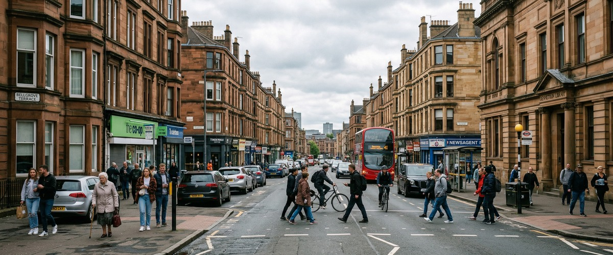
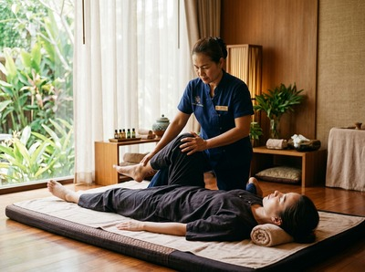

★★★★★ Quality gate failures: readability. Review and edit before removing this notice. ★★★★★
Dennistoun is one of Glasgow's most characterful residential neighbourhoods, sitting about a mile and a quarter east of the city centre in the east end.

Its Victorian sandstone tenements, independent cafés along Duke Street, and a strong sense of community make it one of the most sought-after places to live in the east of the city. Thai massage in Dennistoun is within easy reach, and residents here make the short journey into Glasgow city centre regularly for work, leisure, and appointments. Serendipity Massage Therapy & Wellness on Hope Street is one of those appointments worth building into your routine.
Dennistoun draws a wide mix of residents: young professionals, creative freelancers, families, and long-term locals. Many commute into the city centre each day. Hours at a desk, followed by the journey home, create a pattern of sitting, carrying tension, and arriving back stiff.
That is exactly what a regular traditional Thai massage is built to address. Serendipity's therapists work on the muscle tension and postural strain that builds across a working week — not just the surface stress.

Hope Street is a straightforward trip from Dennistoun by train, bus, or on foot. It is close enough to make a lunchtime or after-work session genuinely practical. You can book your session online and have it confirmed in minutes, with no need to rearrange your day.
Serendipity offers a full range of therapeutic treatments. Whether you need deep muscle relief or something more restorative, there is a session suited to what your body needs.
Duke Street station is right in the heart of Dennistoun. ScotRail services from there connect directly into Glasgow city centre. From the city centre, Serendipity at Central Chambers, 93 Hope Street is a short walk.
Several bus routes also run along Duke Street into town. By train or bus, the journey takes around ten to fifteen minutes. That makes Serendipity one of the most accessible studios for east end residents.
Serendipity is a professional team practice on Hope Street in Glasgow's financial district. Every therapist is trained to a consistent standard. The techniques they use were developed by head therapist Jariya Malone, drawing from the traditional Thai massage tradition and refined for precise, repeatable results.
Clients from across Glasgow return regularly because the quality holds, regardless of which therapist they see.
For Dennistoun residents managing the physical toll of desk work, commuting, or physical trades, a Thai deep tissue oil massage or a full traditional Thai session can make a real difference. Regular sessions build on each other. Over time, they improve range of motion, reduce chronic muscle tension, and support better sleep.
Dennistoun's Victorian sandstone tenements give the area a distinct look that sets it apart from much of Glasgow. Planned in the 1850s as a prosperous suburb, it became one of the city's most respected working-class areas.
More recently, it has grown into a popular place to live and work. You can read more at Dennistoun on Wikipedia.
Dennistoun sits roughly a mile and a quarter east of Glasgow city centre. Serendipity is at Central Chambers on Hope Street, well within that range. By train from Duke Street station, the journey into the city takes around ten to fifteen minutes. It is a practical distance for a regular appointment before or after work.
The most convenient option is the ScotRail service from Duke Street station. It gets you into the city centre quickly. Several bus routes also run along Duke Street, with connections toward the Hope Street area. Once you arrive in the city centre, Serendipity is a short walk from the main transport links.
Same-day availability depends on the schedule at the time of booking. Serendipity offers online booking with real-time availability, so you can check what is open and book directly online. For the best chance of getting your preferred time, booking a day or two ahead is recommended.
Traditional Thai massage is a strong choice for anyone carrying tension from desk work or a daily commute. It uses assisted stretching and acupressure to release deep muscle tightness, improve posture, and restore range of motion. It works on the whole body while you remain fully clothed. If relaxation and stress relief are your main priorities, a Swedish massage is well worth considering.
Serendipity offers appointments across the week, including evening slots that suit those commuting in from Dennistoun after work. The best way to check current availability is through the online booking system. Call 0141 673 6630 if you would prefer to speak to someone directly about scheduling.